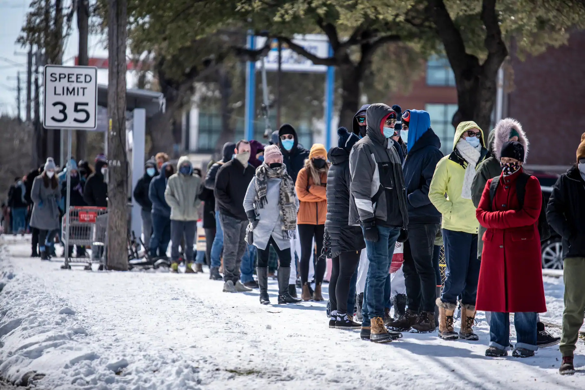

Texas Outage Crisis
Quick Facts
- Texas is experiencing snow in all counties for the first time in 126 years
- The number of power outages reporting during the storm's peak is about 4.3 million
- 90% of Texas' power grid is operated by ERCOT
- At least 22 people in Texas died in connection to the storm
- 8.8 million Texans still under boil water notices
Causes
- Record low temperatures
- Frozen wind turbines
- Most energy generations were offline
- Failure to maintain power grid
- Rolling blackouts
- Pipes freezing and bursting
- Could not keep up statewide demand for food
Effects
- Millions without power
- Skyrocketing electricity bills
- Food and water shortages
- Carbon monoxide poisoning
- Schools cancel classes
- At least 22 people in Texas died
- 8.8 million Texans still under boil water notices
Possible Solutions
- Invest and construct more renewable clean energy in the future
- Better leadership for disaster preparation
- Addressing broken water pipes and other unproperly functioning infrastructure
- Reforming the ERCOT
